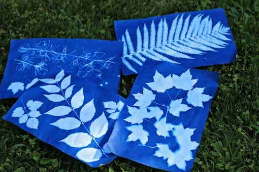

Sun
prints

Sun printing is a process which will fascinate
children. Using light-sensitive paper (often called
"sunprint paper" or "cyanotype paper") it is easy to make
beautiful white-on-blue prints of flat natural objects such
as leaves, flowers or feathers. The images will appear
"magically" in just a few minutes on a sunny day, and the
resulting images can be displayed as artworks or used for a
variety of craft activities.
You will need to invest a little money in this, although a
cheaper version which does not use photo-sensitive paper is
mentioned below. The basic idea is to collect some
interesting natural objects, arrange them on a sheet of the
sunprint paper, expose them to sunlight for a few minutes
(or to a cloudy sky for longer) and then to wash off the
chemicals and leave them to dry. The process is described in
detail at this
web site, which also explains what is happening. The prints
will be much sharper if the natural items are held down flat
against the paper during exposure to the sun, so it is worth
placing a sheet of perspex or glass on top. You might want
to invest in one of the "Sunprint kits" supplied by the
Lawrence Hall of Science, which includes a perspex sheet.
You can easily find these for sale online, for example from
Amazon.
Not only will this activity highlight the delicate and
varied form of leaves, flowers, seed heads and feathers, but
it may also interest older children in chemistry. The
ultraviolet rays included in sunlight are reacting with a
chemical in the paper. Initially this bleaches the blue
colour of the photosensitive paper, but when washed in water
a second chemical reaction takes place which turns the
exposed areas deep blue, whilst the chemicals in the
unexposed areas, which were protected from the sun by your
natural objects, are washed away by the water, leaving white
paper behind.
The pictures produced can be displayed as they are or
framed, but they can also be used to make attractive book
covers, or to cover small boxes used to store "treasures" or
to contain presents. If you want to do this, then take care
to buy sufficiently large sheets of sunprint paper. Some of
those available for sale are quite small.
If the cost of photosensitive paper (typically £1-2 each for
an 8x10 inch or A4 sheet) deters you then there is a much
cheaper approach using coloured sugar paper, which simply
relies on the fact that the colour in the paper will fade in
sunlight. This takes a good deal longer (e.g. a day or more
in full sun) and will not produce images with the same level
of clarity, but it is a lot cheaper. You can find a guide to
this approach from the Natural History Museum here.